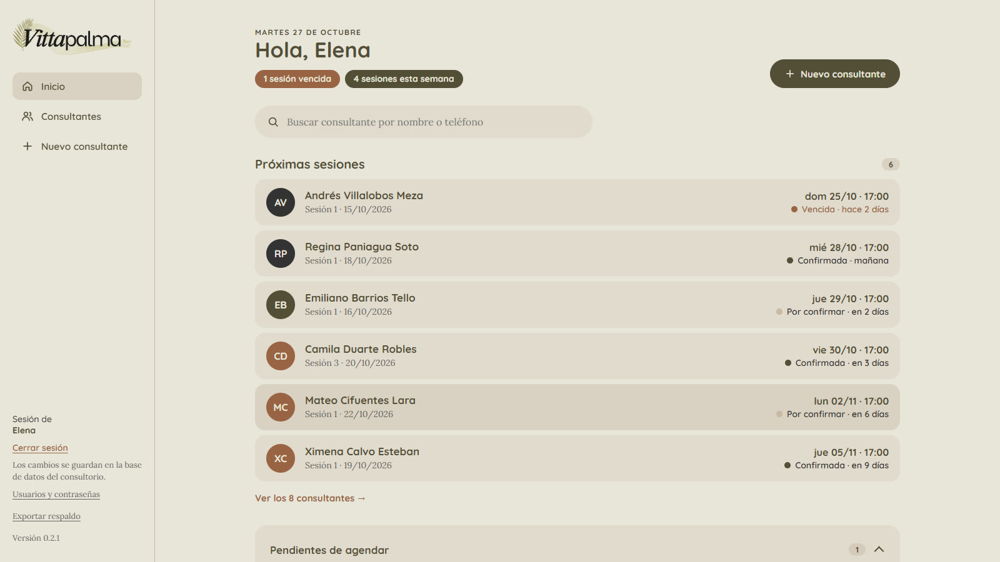
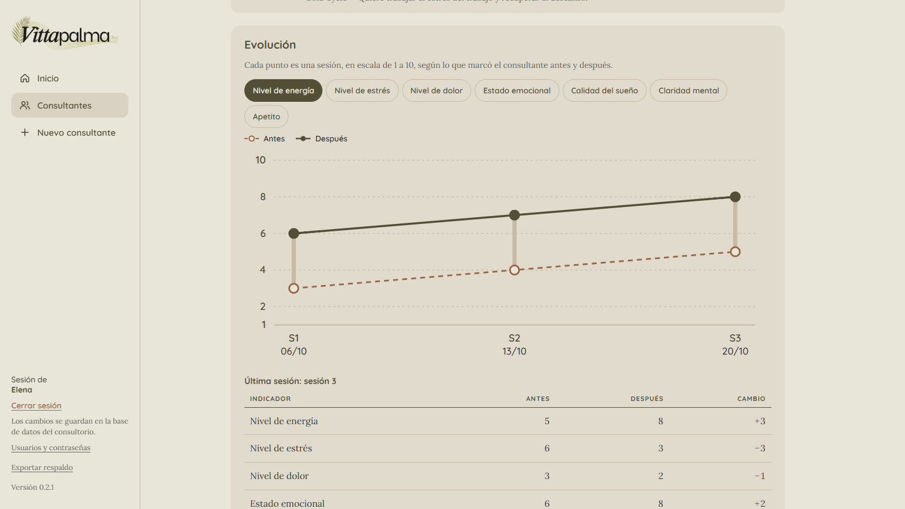
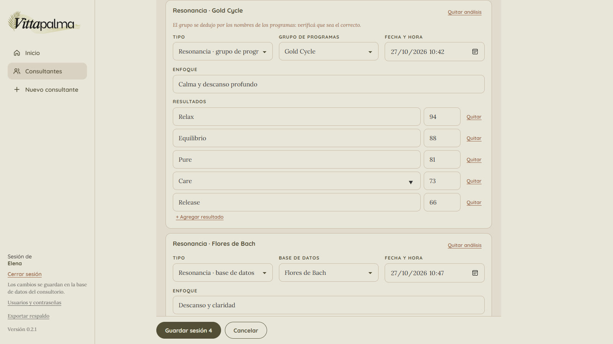
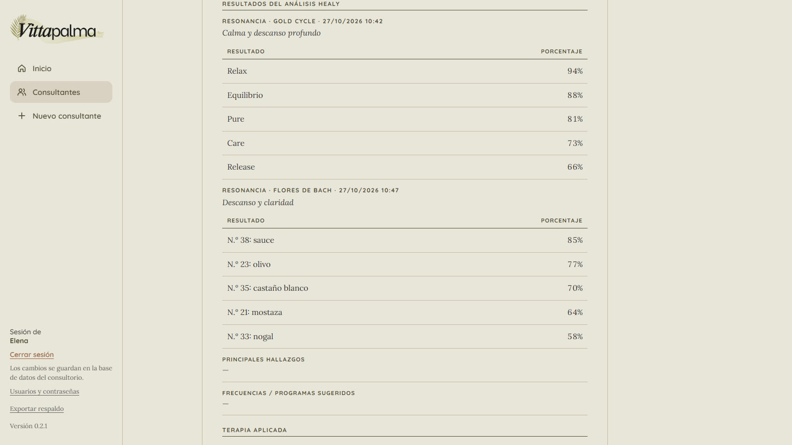

Sistema de gestión Vittapalma
Sistema de escritorio para registrar consultantes y sesiones de terapia Healy, en reemplazo de una planilla en papel. Funciona sin internet: los datos de salud quedan en la computadora de la terapeuta, no en la nube.
Demo con datos ficticios, sin audio (menos de 1 minuto). La app real guarda todo en la computadora de la terapeuta.
Qué se ve en el video
- Cada terapeuta entra con su usuario y contraseña.
- La agenda muestra quién viene, qué falta confirmar y qué venció.
- La ficha de una consultante muestra su próxima sesión y la evolución de cada indicador, sesión a sesión.
- Se carga una sesión nueva: programa principal, programas aplicados y accesorios.
- Se muestran los PDF que exporta Healy y se suben dos a la vez; el sistema los lee, deduce el grupo de programas y la base de datos, y la terapeuta los revisa y corrige antes de guardar.
- Se marca cómo se sintió la persona antes y después de la sesión.
- La sesión queda guardada y lista para imprimir con espacio para las firmas.
Problema
Vittapalma es un espacio de terapia Healy en Tuxtla Gutiérrez, atendido por dos terapeutas. Cada sesión se registraba en una planilla en papel: motivo de consulta, análisis, programas aplicados, cómo se sentía la persona antes y después, y la próxima cita.
Necesitaban un registro ordenado de consultantes y sesiones, con historial, agenda y una hoja imprimible para firmar.
Decisión
Son datos de salud, así que antes de elegir tecnología decidí dónde viven. En lugar de un servicio en la nube (cuentas, hosting y una suscripción mensual, con la información en servidores ajenos), armé una app de escritorio con base de datos local: sin costo mensual, sin depender de internet y con los datos en la computadora de la terapeuta. El código queda en capas para poder pasar a la nube más adelante, si hiciera falta.
Una regla de la clienta ordena el resto: no hay borrado. Lo que se equivoca se corrige o se anula, nunca desaparece.
Construcción
- Ingreso para dos terapeutas, con la opción de mantener la sesión iniciada.
- Agenda con el estado de cada próxima sesión (por confirmar, confirmada, vencida, pendiente de agendar) y un mensaje de WhatsApp ya escrito: la terapeuta lo revisa y lo envía.
- Ficha de cada consultante con la evolución, sesión a sesión, de siete indicadores (energía, estrés, dolor, estado emocional, sueño, claridad mental y apetito), antes y después.
- Registro de sesión con los 24 grupos de programas Healy y sus 218 programas, accesorios Healy y MagHealy, y programas complementarios.
- Lectura de los PDF de análisis que exporta Healy (resonancia, aura y coaching): se suben, se leen en la propia computadora, sin IA ni internet, y aparecen como tarjetas para revisar y corregir. Se guarda solo el resumen. El sistema deduce a qué grupo de programas pertenece cada análisis y reconoce varias bases de datos.
- Hoja de sesión imprimible, con espacio para las firmas.
- Instaladores para Windows y Mac. El de Mac no se puede armar desde Windows, así que se arma con un flujo automático en GitHub.
Entrega y cuidado
Como son datos de salud, cada actualización está pensada para no perder nada: registro de cambios por versión, copia de seguridad automática antes de tocar la base, pruebas de migración con datos inventados y un revisor propio que abre la app empaquetada y recorre sus flujos antes de cada entrega. La versión instalada se ve en pantalla.
Resultado
Entregado a la clienta en octubre de 2026, en la computadora que usa (una Mac), y en prueba con ella. Cuando haya resultados de uso, los sumo acá.
Tecnología
Node.js, Express, SQLite (node:sqlite), Electron,
pdf.js, HTML, CSS y JavaScript sin framework, electron-builder y GitHub
Actions. Desarrollado con asistente de IA (Claude Code); las decisiones
de producto, diseño y revisión son mías.
Pantallas




Todas las pantallas y datos de esta página son de demostración, con nombres inventados.